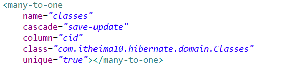
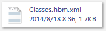
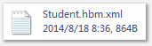

Cascade与inverse 的区别
- cascade 描述的是对象与对象之间的关系
cascade和外键没有关系，在 student表中，sid 、name、 description和cascade 有关系，但是 cid和cascade 没有关系。
- inverse 描述的是对象与外键之间的关系
inverse只和 cid有关系，如果维护，则发出 update语句( 更新外键的 sql语句) ，如果不维护，则不管。
知识大总结：
1、一对多指的是类与集合的关系
2 、多对一指的是类与类的关系
3 、多对多指的是类与集合的关系
4 、一对多的情况下，多的一方维护效率比较高
5 、一对多的情况下，维护关系指的是对外键进行 update操作（一的一方维护关系）
多的一方维护关系，只是对多的一方进行所有的属性进行操作
6 、多对多维护关系
建立关系
在第三张表中插入一行数据
解除关系
在第三张表中删除一行数据
重新建立关系
先删除后增加
7 、因为多对多谁维护关系效率都一样，所以在映射文件中不需要写 inverse属性
8 、一般情况下一对多，在一的一方 inverse属性设置为"true"
9、List<Course> courses = session .createQuery( "from Course where cid in(2,3)").list() ;
10、

包括一对多单向、一对多双项、多对多双向。
从映射文件可以看出 ,set元素描述了两个方面的内容：
- key 从外键的角度描述了两者之间的关系，用于生成 sql语句
- one-to-many 从类与类的角度描述了两者的关系，用于客户端的编码
首先研究一对多单向：
把握住两点：首先，对于程序员，要使用对象的思想，去对模型编程。
其次，对于框架而言，要告诉他表的对应关系。
1 、在映射文件中：
2 、在代码中，必须建立关联

3 、必须显示操作 classes
显示操作
关于一对多单向的映射文件的编写：

首先，students是set类型的集合，里面放的为student引用。因此，
应该先描述那个集合，使用<set>标签，指定需要级联操作的属性，也就是在set中设定cascade属性，一般，在一的一方不维护关系，具体原因是，每一次更新班级的时候，如果维护关系，那么就会也维护其下属的多的一方的所有值，太慢。指定外键，用于去描绘另一个表。
然后在描绘集合中的对象，描绘对象，使用的<one-to-many>这种类型的标签，去描绘类。
详解映射文件，
该映射文件，包含：
- bean到表的映射
- 主键的生成策略
- 其他非联系属性的与表的对应。
- 联系属性的配置。
对于联系型属性的配置，主要是两个属性的配置：级联操作，关系描述。
级联操作：就是说在程序操作一个表中的数据的时候，同时框架也可以对其他表中的数据进行操作。
关系描述：就是在执行级联操作的时候，不但能够操作其他的表，还能够用框架完成对这些表之间关系的描述，说白了，就是外键，告知框架，怎样建立外键。
cascade属性的作用以及取值（级联操作）
save-update：对classes对象进行save或者update操作的时候，对student进行怎么样(insert或者update)的操作
如果student是一个持久化状态的对象，看副本
如果和副本不一样，则执行update操作
如果student是一个临时状态的对象，则执行insert操作
all
delete：在删除班级的同时删除学生
null
inverse 属性的作用以及取值（维护关系） 翻译过来是不维护取值包括默认，true，false等。
default/false
true 不维护关系
false 维护关系
首先研究的是级联操作，就是操作一个表，可以级联操作其他的表，这个先不执行关系操作，所谓的关系，就是通过班级，可以找到该班级的所有的学生。
首先研究级联操作的过程，这个过程中，不涉及关系的描述。必须指定，谁是外键。
在一对多的单向中，通过班级来进行对student的配置。
执行过程：
首先，在代码中把班级除了主键（由框架生成，没有业务逻辑）以外的普通属性，或者是关系属性（set类型的student），封装好，然后，就开始后执行save方法。仅仅是save班级这个domain。
然后：框架会根据配置文件，生成相应的表，到了classes类中的set集合类型的属性，提取配置文件中关于set属性的配置，首先，发现他是一个级联操作，并且配置中明确表示，cid是该student的外键，因此，就会把外键在student表中，成为一列，关于cid的值，是由关系完成的，不是级联完成的。因此，先不用管cid的取值。
然后，会把class中set集合中的数据，级联放到student表中去。这就是级联操作。
也就说，这样class中用student，就会级联操作student表。这个已经在映射文件中，指定。

delete操作：
在代码中，我们书写的是：
Classes classes= (Classes)session.get(Classes. class, 1);
session.delete(classes);（显示操作）
而框架实际执行的sql语句为：
第一步，从数据库中获取班级，这个是get（班级）方法对应的语句。目的是获得这个班级
Hibernate:
select
classes0_.cid as cid0_0_,
classes0_.name as name0_0_,
classes0_.description as descript3_0_0_
from
Classes classes0_
where
classes0_.cid=?
第二步，获取该班级的所有的学生信息。
Hibernate:
select
students0_.cid as cid0_1_,
students0_.sid as sid1_,
students0_.sid as sid1_0_,
students0_.name as name1_0_,
students0_.description as descript3_1_0_
from
Student students0_
where
students0_.cid=?
第三步，为了删除，必须先解除关系，也就是设置给一个学生对应的外键为null，这样，就和班级没有关系了。
Hibernate:
update
Student
set
cid=null
where
cid=?
第四步：执行删除学生的操作。
Hibernate:
delete
from
Student
where
sid=?
第五步：执行删除班级的sql语句操作。
Hibernate:
delete
from
Classes
where
cid=?
重点，在使用save-update的级联操作，完成删除，需要在代码中，好好弄弄，这个可以加深你的理解：
其实，没有多么高深，在不使用delete的级联操作下，也就是说，框架不会帮我们自动完成关系的解绑，因此，我们要自己手动解绑，也就是让班级的那个set集合为null，这样，班级就和学生没有关系，也就能删除了。
classes.setStudents(null);
对应的sql语句为：
update
Student
set
cid=null
where
cid=?
手动完成了关系的解绑。
接下来，就是好好研究一下关系。
inverse 属性的作用以及取值：
维护关系
default/false
true 不维护关系
false 维护关系
在这里维护关系指的是发出更新外键的update语句，外键，就是维护关系的关键，通过外键，去和其他表交流。
一对多双向，
上面研究的是从一出发，去维护关系的，现在，研究从多出发， 去维护和一之间的关系。
首先从映射文件出发：


映射文件详解：
例如，course映射文件，有一个set集合，里面放的是student，那么先描述set集合：指定是级联操作，指定要创建的第三张表，指定cid是第三张表的主键。
接下来，是对集合中的对象，也就是student指定，它对应的多的是student，并且，指定我创建的第三个表，是通过sid找到那个表（student）的。
同理：
对于student，也会创建一样的表，然后，也会后自行sid为该表的主键，指定通过第三张表的cid找到course。
图解如下：

文字表述，首先，从左边出发，将自己的cid作为中间桥梁的外键，然后我可以找到那个many类，通过sid外键找到。
从右边出发，将自己的sid作为第三张表的外键，然后找到另一个many表，通过cid外键找到。
注意，两个many类，都用该使用cascade属性，这样才是双向。
多对多的关系：
* 建立关系
* 相当于在第三张表中插入一行记录
* 解除关系
* 相当于在第三张表中删除一行记录
* 重新建立关系
* 先删除后增加
关于一对多，以及多对多的图解：

补充，关于一对一，其实就是在一对多的基础上，规定学生表中的外键，也就是班级唯一，就是一对一体现，一个学生，只能参考一个外键。
小技巧：
List<Course> courses = session .createQuery("from Course where cid in(2,3)").list() ;
一对一：